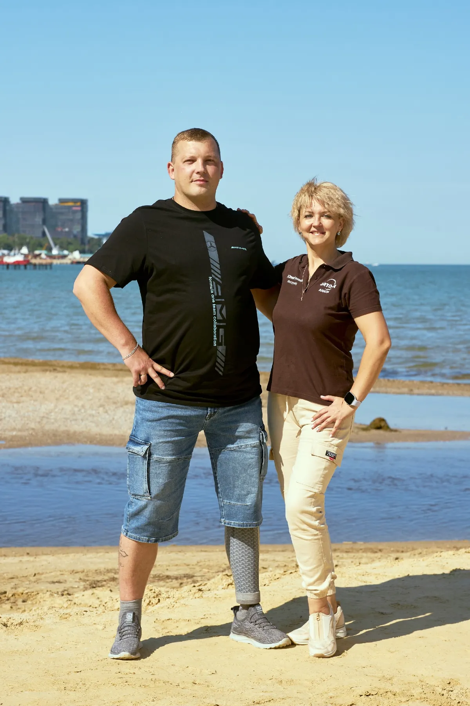
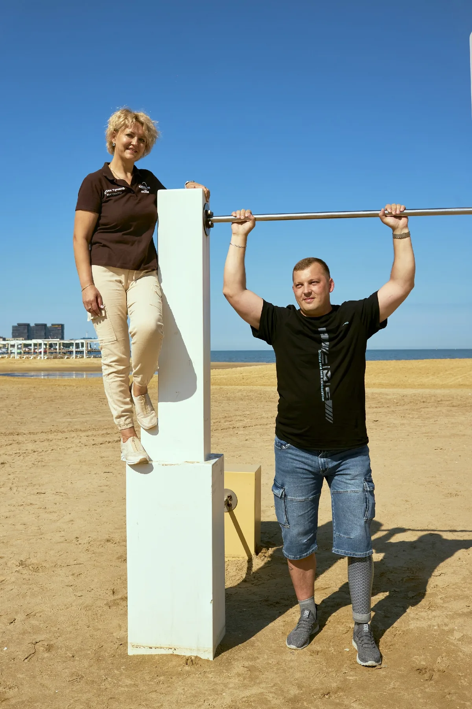

Протезирование и настройка
Работаем в собственной мастерской: подбираем комплектующие, моделируем и настраиваем протез под ваши задачи и образ жизни.
Обсудить задачуАнапа · протезирование и реабилитация
Семейный центр протезирования и школа ходьбы на протезах. Помогаем разобраться с протезом, освоить движение и постепенно возвращаться к привычной жизни.
Два специалиста — один общий путьПрофессиональный опыт и личное понимание жизни с протезом

Важно не только подобрать изделие. Важно научиться с ним жить: спокойно стоять, держать баланс, двигаться в своём темпе и снова чувствовать уверенность.
Мы живём и работаем в Анапе. Наша мастерская выросла из личного опыта и ежедневной работы с людьми, которым нужно освоиться с протезом и найти свой маршрут к активности.
Наша семейная командаНачинаем с вашей ситуации — и вместе определяем, что будет полезно именно сейчас.
Работаем в собственной мастерской: подбираем комплектующие, моделируем и настраиваем протез под ваши задачи и образ жизни.
Обсудить задачуРаботаем над балансом, координацией и уверенностью в движении — от базовых навыков до бытовых маршрутов.
Узнать подробнееПомогаем с адаптацией, корректировкой настроек и вопросами, которые появляются уже в обычной жизни.
Задать вопросОбсудим, что не получается, чего вы опасаетесь и с чего логичнее начать. Без давления и универсальных обещаний.
Начать разговорДва взгляда на одну задачу: как правильно подобрать протез и как освоить его в повседневной жизни.
Протезирование · личный опыт
Участник СВО, Иван сам прошёл путь после тяжёлого ранения и живёт с протезом бедра. Этот опыт помогает смотреть на задачу не только с технической стороны, но и через реальные ежедневные потребности человека.
Инструктор школы ходьбы
Юлия помогает осваивать движение с протезом: учиться держать баланс, работать над координацией и постепенно возвращать уверенность в привычных делах.
Правильно подобранный протез — важная часть пути. Дальше начинается обучение, практика и поддержка. В этом мы работаем вместе.
Иван и Юлия Тучины
Личный опыт — часть нашей историиМы не обещаем мгновенных результатов. Вместо этого разбираемся в конкретной задаче, честно обсуждаем возможности и помогаем двигаться вперёд шаг за шагом.
Личный опытМы понимаем, что жизнь с протезом — это не только техника, но и повседневные привычки.
Работа в связкеНастройка изделия и обучение ходьбе дополняют друг друга.
Поддержка рядомМы в Анапе и готовы обсуждать вопросы, которые появляются после выдачи протеза.
Не обязательно сразу знать, какое решение вам нужно. Первый шаг — спокойно поговорить.
Что сейчас не получается, что уже пробовали и какой результат для вас важен.
Разберём, какие вопросы относятся к настройке протеза, а какие — к обучению движению.
Определим реалистичный план действий и продолжим работу в подходящем темпе.
Не нужно подбирать правильные слова или заранее знать все детали. Расскажите как есть — вместе разберёмся, с чего начать.
Задать свой вопросДля начала стоит понять, что именно вызывает трудности: посадка и настройка протеза, баланс, координация или страх движения. На консультации обсудим вашу ситуацию и возможные следующие шаги.
Да. Можно обсудить вопросы адаптации, обучения ходьбе, обслуживания и настройки. Конкретные варианты зависят от изделия и вашей ситуации.
Не нужно торопиться. Важно понять, в каких ситуациях возникает неуверенность, и подобрать подходящий формат работы над базовыми навыками движения.
Конечно. Опишите, что беспокоит, — это поможет понять, какая информация понадобится и какие шаги можно обсудить дальше.
Расскажите, что сейчас не получается и что для вас важно. Обсудим ситуацию и возможные следующие шаги без давления и универсальных обещаний.